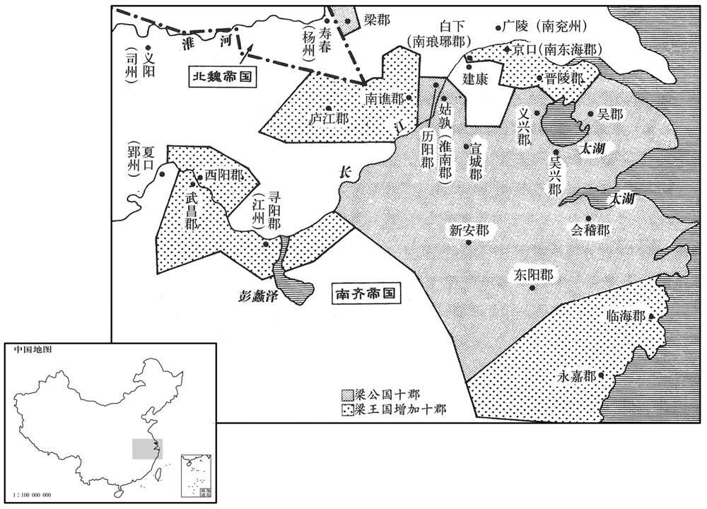
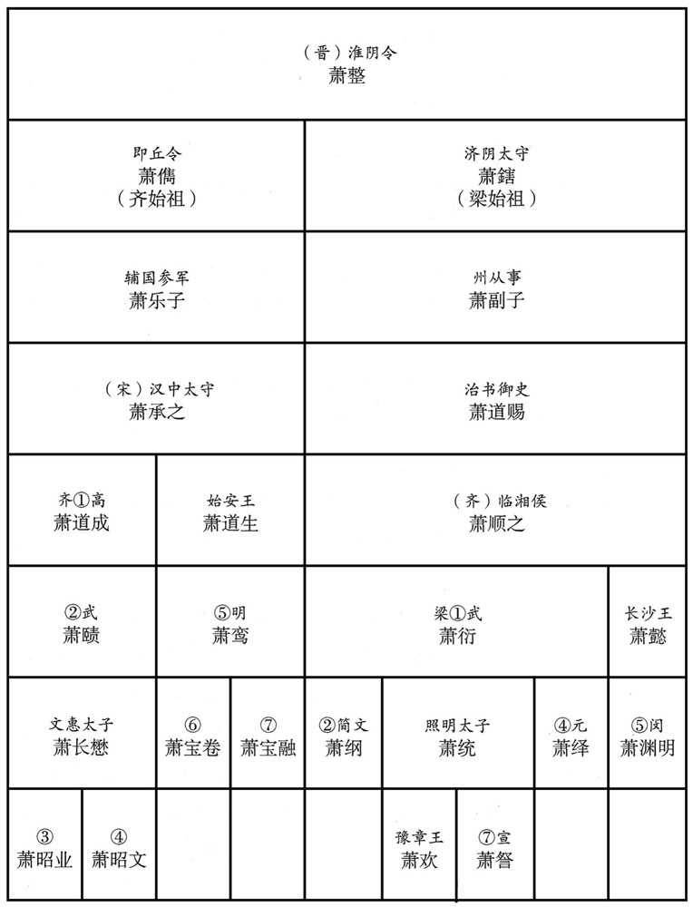

公元502年资治通鉴：本年记事、原文与白话对照
按原书编年位置阅读；追叙和史论不等于本年发生的事件。白话采用所据译本，缺译不以生成译文补齐。
卷145 · 本年记事
公元502年 · 梁高祖武皇帝天监元年
天监元年〔（壬午、五○二）自是年三月以前，犹是齐和帝中兴二年。〕
上传原文的注释括号有异常，字符原样保留；无法可靠划分的段落默认全文显示。
本年事件索引（现代整理）
- 南齐和帝遣席阐文等赴建康慰劳
- 萧衍下令裁撤东昏侯时的浮费
- 宣德太后入宫临朝称制，萧衍解除承制
- 宣德太后任萧昺监南兖州诸军事
- 宣德太后授萧衍都督中外诸军事等权力
- 宣德太后任王亮为中书监、尚书令
- 萧衍召范云、沈约、任昉等参与谋议
- 沈约、范云劝萧衍接受禅位，萧衍决定建梁
- 萧衍进位相国、封梁公并设置百官
- 萧衍诬称萧宝晊等谋反，杀害南齐宗室
- 宣德太后命梁国按朝廷体制选任官员
- 范云、王茂劝萧衍将东昏余妃转赐王茂
- 宣德太后加封萧衍为梁王并大赦
- 萧衍杀南齐邵陵王等三位宗室
- 鄱阳王萧宝寅逃往北魏寿阳
- 和帝东归，萧憺治理荆州、恢复民生
- 南齐和帝抵姑孰，下诏禅位于梁
- 南齐庐陵王萧宝源去世
- 鲁阳蛮鲁北燕起兵攻魏颍州
- 萧衍即皇帝位，改元天监
- 梁武帝奉南齐和帝为巴陵王安置姑孰
- 梁武帝追尊父母为帝后并封诸弟为王
- 梁武帝任王亮、王莹、沈约、范云等官
- 梁武帝下诏遣放后宫等处宫女
- 梁武帝令郑伯禽杀死巴陵王萧宝融
- 颜见远因南齐禅位而绝食去世
- 梁武帝下诏讨论赎刑，准许官吏以赎代刑
- 梁武帝封萧宝义为巴陵王奉祀南齐
- 梁武帝劝萧子恪兄弟不必因改朝换代疑惧
- 梁武帝征谢朏、何胤、何点任官，三人不就
- 梁武帝设置谤木、肺石函听取民间意见
- 梁武帝崇尚节俭并以廉能考核、迁升地方官
- 李崇击败鲁阳蛮并徙置其部众
- 北魏顿丘公穆亮去世
- 孙文明等夜闯宫门作乱，张弘策遇害
- 陈伯之不识文字，褚緭等利用其昏愚敛财
- 陈伯之听信褚緭等人鼓动，举兵反梁
- 陈伯之驱逐程元冲并任褚緭等为亲信
- 梁武帝命王茂率军讨伐陈伯之
- 北魏党法宗袭取梁朝大岘戍
- 陈伯之击败王茂后逃往北魏
- 梁武帝遣人慰劳刘季连并命其整装赴任
- 朱道琛挑拨刘季连与邓元起，刘季连起兵反叛
- 李膺筹集粮食助邓元起平蜀
- 梁武帝命蔡法度等修订梁律
- 梁武帝校正雅乐并增设编钟编磬
- 北魏尊元丕为三老
- 元澄欲伐钟离，范绍以无粮劝止
- 宣武帝巡幸邺城后返回洛阳
- 梁武帝立小庙祭祀祖母
- 梁武帝立萧统为太子
- 北魏洛阳宫室建成
- 张嚣之攻取木陵戍，旋被北魏夺回
- 邓元起围攻成都，刘季连坚守
- 高肇因求娶陈留公主不成而诬陷张彝
- 江东大旱，米价暴涨民多饿死

本年形势与背景参考图

本年形势与背景参考图
春，正月，齐和帝遣兼侍中席阐文等慰劳建康。〔劳，力到翻。〕
春季，正月，南齐和帝萧宝融派遣兼侍中席阐文等人到建康慰劳。
大司马衍下令：「凡东昏时浮费，自非可以习礼乐之容，缮甲兵之备者，余皆禁绝。」〕
大司马萧衍下令：“凡是东昏侯时不必要的开支，除了用以操习礼乐法度、修缮军事装备者外，其余一概禁绝。”
戊戌，迎宣德太后入宫，临朝称制；衍解承制。〔衍承制见上卷上年。蹔解之以觇人心。朝，直遥翻。〕
戊戌（初九），萧衍迎宣德太后进宫，让她临朝摄政，行使皇帝的权力。萧衍停止执政。
己亥，以宁朔将军萧昺监南兖州诸军事。昺，衍之从父弟也。〔昺，兵永翻。昺与帝同祖治书侍御史道赐。监，工衔翻。从，才用翻。〕
己亥（初十），宣德太后任命宁朔将军萧昺监南兖州诸军事。萧昺是萧衍的堂弟。
壬寅，进大司马衍都督中外诸军事，剑履上殿，赞拜不名。〔上，时掌翻。〕
壬寅（十二日），宣德太后提升萧衍为都督中外诸军事，特许他可以佩剑穿鞋上殿，以及朝见赞拜可以不报姓名。
己酉，以大司马长史王亮为中书监、尚书令。
己酉（十九日），宣德太后任命大司马王亮为中书监、尚书令。
初，大司马与黄门侍郎范云、南清河太守沈约、司徒右长史任昉同在竟陵王西邸，〔事见一百三十六卷齐武帝永明二年。守，式又翻。任，音壬。昉，分两翻。〕意好敦密，〔敦，厚也。好，呼到翻。〕至是，引云为大司马咨议参军、领录事，〔衍录尚书，其录府事使云领之。〕约为骠骑司马，〔为衍骠骑大将军府司马。骠，匹妙翻。骑，奇寄翻。〕昉为记室参军，与参谋议。前吴兴太守谢朏、国子祭酒何胤先皆弃官家居，〔齐明帝建武初，朏、胤皆弃官去。朏，敷尾翻。先，悉荐翻。〕衍奏征为军谘祭酒，朏、胤皆不至。
当初，大司马萧衍与黄门侍郎范云、南清河太守沈约、司徒长史任昉一同在竟陵王的西官邸，彼此情意甚笃，关系非常密切。到目前，萧衍就推荐范云为大司马谘议参军、领录事，沈约为骠骑司马，任昉为记室参军，遇事都让他们参与策谋计议。前吴兴太守谢朏、国子祭酒何胤先前都弃官回家，萧衍上奏宣德太后，征召他们为军谘祭酒，但是谢朏和何胤都没有来就任。
大司马内有受禅之志，沈约微扣其端，大司马不应；他日，又进曰：「今与古异，不可以淳风期物。〔淳风，谓淳古之风也。〕士大夫攀龙附凤，皆望有尺寸之功。今童儿牧竖皆知齐祚已终，明公当承其运，天文谶记又复炳然；〔谶，楚谮翻。〕天心不可违，人情不可失。苟历数所在，虽欲谦光，亦不可得已。」〔易曰：谦尊而光。〕大司马曰：「吾方思之。」约曰：「公初建牙樊、沔，此时应思；〔沔，弥兖翻。〕今王业已成，何所复思！若不早定大业，脱有一人立异，即损威德。且人非金石，时事难保，岂可以建安之封遗之子孙！〔复，扶又翻；下无复、岂复同。遗，唯孝翻。〕若天下还都，公卿在位，则君臣分定，〔分，扶问翻。〕无复异心，君明于上，臣忠于下，岂复有人方更同公作贼！」大司马然之。约出，大司马召范云告之，云对略同约旨，大司马曰：「智者乃尔暗同。卿明早将休文更来！」〔将，携也，挟也，领也。休文，沈约字也。〕云出，语约，约曰：「卿必待我！」云许诺，而约先期入。〔语，牛倨翻。先，悉荐翻。〕大司马命草具其事，约乃出怀中诏书并诸选置，大司马初无所改。俄而云自外来，至殿门，不得入，徘徊寿光合外，但云「咄咄！」〔江南禁中有寿光省。咄，当没翻。毛晃曰：咄咄，咨嗟语也。〕约出，问曰：「何以见处？」约举手向左，〔谓处之以尚书左仆射也。处，昌吕翻。〕云笑曰：「不乖所望。」有顷，大司马召云入，叹约才智纵横，〔纵，子容翻。〕且曰：「我起兵于今三年矣，〔东昏侯永元二年十一月，衍起兵，至是首尾三年。〕功臣诸将实有其劳，〔将，即亮翻。〕然成帝业者，卿二人也。」
大司马萧衍心里有受禅登基的念头，沈约稍微加以挑明，但是萧衍没有吭声。有一天，沈约又向萧衍进言：“如今与古代不同了，不可以期望人人都能保持着淳古之风，士大夫们无不攀龙附凤，都希望能有尺寸之功劳。现在连小孩牧童都知道齐的国运已经终结了，明公您应当取而代之，而且天象预兆也非常显著了。天意不可违抗，人心不可失去。假如天道安排如此，您虽然想要谦逊礼让，而实际上也是办不到的。”大司马萧衍这才吐露了一句：“我正在考虑这件事。”沈约又说道：“明公您刚开始在樊、沔兴兵举事，在那时是应该思考的，可是如今王业已经成功，还考虑什么呢？如果不早点完成大业，若有一人提出异议，就会有损于您的威德。况且人非金石，事情难测，万一您有个三长两短，难道就仅仅把建安郡公这么一个封爵留给子孙后代吗？如果天子回到京城，公卿们各得其位，那么君臣之间的名分已经定了，他们就不再会产生崐什么异心了，于是君明于上，臣忠于下，那里还会有人再同您一起作反贼呢？”大司马对沈约所说的这些话深表同意。沈约出去之后，大司马又叫范云进去，告诉了他自己的心思，征求他的看法，范云的回答与沈约所说的意思差不多，至此，大司马才对范云讲道：“智者所见，不谋而合。您明天早晨带着沈休文再来这里。”范云出来之后，把萧衍的话告诉了沈约，沈约说：“您一定要等我呀！”范云答应了。但是，第二天早晨，沈约提前去了，大司马命令他起草关于受命登基的诏书，于是沈约从怀中取出已经写好的诏书以及人事安排名单，大司马看过之后，一点也没有改动。不一会儿，范云从外面来了，到了殿口门，由于要等待沈约，不能一个人先进去，而等来等去不见沈约前来，只好在寿光阁外徘徊，嘴中不停地发出“咄咄”表示奇怪的声音。沈约出来了，范云这才明白了原来沈约赶在自己之前已经进去了，就问他：“对我怎么安排了？”沈约举起手来向左一指，意思是安排范云为尚书左仆射，范云就笑了，说：“这才和我所希望的差不多。”过了一会儿，大司马传范云进去，他当着范云的面赞叹了一番沈约如何才智纵横，并且说道：“我起兵至今已经三年了，各位功臣将领确实出了不少力气，但是成就帝业者，只是你们两人啊。”
甲寅，诏进大司马位相国，总百揆，扬州牧，封十郡为梁公，〔时以豫州之梁郡、历阳、南徐州之义兴、扬州之淮南、宣城、吴兴、会稽、新安、东阳凡十郡为梁公国。相，息亮翻。〕备九锡之礼，置梁百司，去录尚书之号，〔去，羌吕翻。〕骠骑大将军如故。二月，辛酉，梁公始受命。
甲寅（二十四日），宣德太后诏令大司马萧衍位进相国、总百揆、扬州牧，并封他十郡为梁公，加九锡之礼，在梁公国设置各种官员，免去录尚书的称号，但骠骑大将军的称号照样不变。二月辛酉（初二），梁公萧衍方才接受诏命。
齐湘东王宝晊，〔晊，之日翻。〕安陆昭王缅之子也，〔缅，齐明帝之弟。缅，弥兖翻。〕颇好文学。〔好，呼到翻。〕东昏侯死，宝晊望物情归己，坐待法驾，既而王珍国等送首梁公，梁公以宝晊为太常，宝晊心不自安。壬戌，梁公称宝晊谋反，并其弟江陵公宝览、汝南公宝宏皆杀之。
南齐湘东王萧宝晊是安陆昭王萧缅的儿子，颇爱好文学。东昏侯死后，萧宝晊希望人心都向着自己，坐等即位。但是，到王珍国把东昏侯的首级送给梁公，梁公任命萧宝晊为太常，萧宝晊就心中不安了。壬戌（初三），梁公声称萧宝晊谋反，把萧宝晊以及其弟弟江陵公萧宝览、汝南公萧宝宏一起杀掉了。
丙寅，诏梁国选诸要职，悉依天朝之制。〔朝，直遥翻。〕于是以沈约为吏部尚书兼右仆射，范云为侍中。
丙寅（初七），宣德太后诏令梁国选任各种要职官员，全部依照朝廷之制。于是，任命沈约为吏部尚书兼右仆射，范云为侍中。
梁公纳东昏余妃，颇妨政事，范云以为言，梁公未之从。云与侍中、领军将军王茂同入见，〔自沈约至王茂，皆梁国官也。见，贤遍翻。〕云曰：「昔沛公入关，妇女无所幸，此范增所以畏其志大也。〔事见九卷汉高帝元年。〕今明公始定建康，海内想望风声，柰何袭乱亡之迹，以女德为累乎！」〔左传：富辰曰：女德无极。杜预注云：妇女之志，近之则不知止足。累，力瑞翻。〕王茂起拜曰：「范云言是也。公必以天下为念，无宜留此。」梁公默然。云即请以余氏赉王茂，〔赉，洛代翻。〕梁公贤其意而许之。明日，赐云、茂钱各百万。
梁公萧衍纳取了东昏侯的余妃，对政事颇有妨害，范云加以劝说，但是梁公没有听从。范云又与侍中、领军将军王茂一同入见萧衍，范云对萧衍说：“过去沛公刘邦进关，不亲近女色，这正是范增敬畏其志向远大之处。如今明公您刚平定建康，海内之众对您的名声非常景仰，您如何可以沿袭那种乱身亡国的行迹，沉溺于女色呢？”王茂也下拜说道：“范云说的极对。您一定要以天下为念，不应该把这个女人留在身边。”梁公听了，默然无语。于是，范云就请求萧衍把余氏赏赐给王茂，梁公认为他们的意见正确，就同意把余氏赏给了他。次日，萧衍分别给范云、王茂赏赐了一百万钱。
丙戌，诏梁公增封十郡，进爵为王。〔时以豫州之南谯。庐江，江州之寻阳，郢州之武昌、西阳，南徐州之南琅邪、南东海、晋陵，扬州之临海、永嘉十郡益梁国。〕癸巳，受命，赦国内及府州〔【章：十二行本「州」下有「所统」二字；乙十一行本同；孔本同；退斋校同。】〕殊死以下。〔自进爵为王己上，凡诏皆以宣德太后称制行之。〕
丙戌（二十七日），宣德太后诏令给梁公增封十郡，进爵位为王。三月癸巳（初五），萧衍接受了诏命，并且下令赦免建康城内以及各府州死刑以下犯人。
辛丑，杀齐邵陵王宝攸、晋熙王宝嵩、桂阳王宝贞。〔南史齐纪作「宝攸」，本传作「宝修」。三王皆明帝之子。〕
辛丑（十三日），南齐邵陵王萧宝攸、晋熙王萧宝嵩、桂阳王萧宝贞被杀。
梁王将杀齐诸王，防守犹未急。鄱阳王宝寅家阉人颜文智与左右麻拱等密谋穿墙夜出宝寅，具小船于江岸，着乌布襦，〔着，则略翻。襦，汝朱翻，短衣也。〕腰系千余钱，潜赴江侧，蹑屩徒步，足无完肤。〔屩，居勺翻，草履也。〕防守者至明追之，宝寅诈为钓者，随流上下十余里，追者不疑。待散，乃渡西岸投民华文荣家，〔待散，待追者散也。华，户化翻。〕文荣与其族人天龙、惠连弃家将宝寅遁匿山涧，赁驴乘之，昼伏夜行，抵寿阳之东城。魏戍主杜元伦驰告扬州刺史任城王澄，以车马侍卫迎之。〔任，音壬。〕宝寅时年十六，徒步憔悴，〔悴，秦醉翻。〕见者以为掠卖生口。澄待以客礼，宝寅请丧君斩衰之服，澄遣人晓示情礼，以丧兄齐衰之服给之。〔丧，息浪翻。衰，仓回翻。齐，音咨。〕澄帅官僚赴吊，宝寅居处有礼，一同极哀之节。〔礼，居君父之丧极哀。帅，读曰率。处，昌吕翻。〕寿阳多其义，□皆受慰喭；〔抚而安之曰慰，引生曰唁，唁，与喭同，鱼战翻。〕唯不见夏侯一族，〔夏侯之族本谯郡谯人，居于寿阳。夏，户雅翻。〕以夏侯详从梁王故也。澄深器重之。〔为萧宝寅贵显于魏而不终张本。〕
梁王萧衍将要杀害南齐诸王，但是监视看管措施还不甚严密。鄱阳王萧宝寅家中的阉人颜文智与左右心腹麻拱等人密谋，在夜间挖开墙壁，把萧宝寅送出去，又在长江岸边准备了一只小船。萧宝寅穿着黑布短衣，腰里系着一千多钱，偷偷地跑到江边。他空着草鞋，徒步而行，以致两只脚全都磨破了，天高之后，看管的人发现萧宝寅不见了，就去追赶，萧宝寅装作是钓鱼人，与追赶者一起在江中并舟而行了十多里，追赶者都没有对他产生怀疑。等到追赶的人离开之后，萧宝寅就在西边靠岸，投奔到百姓华文荣家中，华文荣与其同族之人华天龙、华惠连丢弃家业，带着萧宝寅逃到山沟里。他们租了一匹毛驴，让萧宝寅骑着，昼伏而夜行，来到了寿阳的东城。驻守在这里的北魏戍主杜元伦急忙把情况报告了扬州刺史任城王元澄，元澄用车马侍卫迎接萧宝寅。当时，萧宝寅年纪十六岁，由于徒步而行，所以形容憔悴，见到的人还以为他是被掠卖来的人口。元澄以招待客人的礼节对待萧宝寅，萧宝寅向元澄要为皇帝守丧而穿的生麻布制的丧服，元澄派人对萧宝寅晓示了一番情理，最后只给了他为兄长守丧而穿的熟麻布制的丧服。元澄率领手下的官吏们亲赴萧宝寅住处去吊丧，萧宝寅的一举一动，表现得与居君父之丧完全一样。寿阳有许多受过南齐旧恩的故旧，都来萧宝寅处吊唁，唯独不见夏侯一姓的人来，这是由于夏侯详跟从了梁王萧衍的缘故。元澄非常器重萧宝寅。
齐和帝东归，〔将东归建康也。〕以萧憺为都督荆‧湘等六州诸军事、荆州刺史。〔憺，徒敢翻，又徒滥翻。〕荆州军旅之后，公私空乏，〔憺厉精为治，〔治，直吏翻。〕广屯田，省力役，存问兵死之家，供其乏困。自以少年居重任，〔少，诗照翻。〕谓佐吏曰：「政之不臧，士君子所宜共惜。吾今开怀，卿其无隐！」于是人人得尽意，民有讼者皆立前待符教，决于俄顷，曹无留事。荆人大悦。
南齐和帝萧宝融将东归建康，他任命萧憺为都督荆、湘等六州诸军事及荆州刺史。荆州经过战争之后，公私两方在财用方面都非常空乏，萧憺励精图治，广开屯田，省免劳役，抚问有家人当兵阵亡了的人家，供应救济他们。他自以为年纪轻而居于重任，所以特别用心，对手下的官吏们说：“政事如果没有办好，大家都应该共同努力。我现在开诚布公于你们，希望你们也不要有所隐瞒。”于是，人人都感到心情舒畅，办事效率大增，民众如有诉讼者站在一旁等待处理，很快就可以做出决定，官署中设有积压的事情。因此，荆州人非常高兴。
齐和帝至姑孰，丙辰，下诏禅位于梁。
南齐和帝到达姑孰，于两辰（二十八日），下诏令禅让皇位于梁。
丁巳，庐陵王宝源卒。〔非疾也。宝源者，齐明帝第五子。〕
丁巳（二十九日），庐陵王萧宝源去世。
鲁阳蛮鲁北燕等起兵攻魏颍州。〔魏置颍州于汝阴，又，颍州郡旧置颍州。〕
鲁阳的蛮人鲁北鷰等人起兵攻打北魏颍州。
夏，四月，辛酉，宣德太后令曰：「西诏至，〔齐和帝虽已至姑孰，其地犹在建康之西，故曰西诏。〕帝宪章前代，〔宪章前代者，以前代为法度也。〕敬禅神器于梁，明可临轩〔明，谓明旦也。〕遣使恭授玺绂，未亡人归于别官。」〔古者君薨，其夫人在者自称未亡人。使，疏吏翻。玺，斯氏翻。绂，音弗。〕壬戌，发策，遣兼太保、尚书令亮等奉皇帝玺绂诣梁宫。〔亮，王亮也。〕丙寅，梁王即皇帝位于南郊，大赦，改元。〔始改元天监。〕是日，追赠兄懿为丞相，封长沙王，谥曰宣武，葬礼依晋安平献王故事。〔懿为东昏侯所杀，葬不成礼，今依晋葬安平王孚礼葬之。〕
夏季，四月辛酉（二十七日），宣德太后发令：“西边的诏令已经到了，皇帝效法前代，把皇位恭敬地禅让给梁，明天早晨我要来到殿前，派使者向梁公恭授印玺，之后我将回到别宫去居住。”壬戌（二十八日），宣德太后发出策书，派遣兼太保、尚书令王亮等人奉送皇帝印玺到梁宫。丙寅（疑误），梁王萧衍于南郊即位登基，大赦天下，改年号为天监。在这天，萧衍追赠其兄萧懿为丞相，封为长沙王，谥号为宣武，并且依照晋代安葬安平献王的先例重新安葬了萧懿。
丁卯，奉和帝为巴陵王，宫于姑孰，优崇之礼，皆仿齐初。〔仿齐奉汝阴王之礼。〕奉宣德太后为齐文帝妃，王皇后为巴陵王妃。齐世王、侯封爵，悉从降省，〔降者，王降公，公降侯。省者，除其封国。省，所梗翻。〕唯宋汝阴王不在除例。〔备三恪也。〕
丁卯（疑误），萧衍诏令，奉南齐和帝为巴陵王，并为他在姑孰建了王宫，对他的待遇和尊敬，都仿照南齐开国之初对待汝阴王的方法。奉宣德太后为齐文帝妃，王皇后为巴陵王妃。又对于南齐的王、侯们全部降低一级爵位，除去他们的封国，唯有宋汝阴王不在此例之内。
追遵皇孝为文皇帝，庙号太祖；皇妣为献皇后。〔考异曰：南史云五月追尊。今从梁书。〕追谥妃郗氏曰德皇后。〔东昏侯永元元年，郗氏卒于襄阳。郗，丑之翻。〕封文武功臣车骑将军夏侯详等十五人为公、侯。〔骑，奇寄翻。〕立皇弟中护军宏为临川王，南徐州刺史秀为安成王，雍州刺史伟为建安王，〔雍，于用翻。〕左卫将军恢为鄱阳王，荆州刺史憺为始兴王；以宏为扬州刺史。
梁武帝萧衍追尊自己的父亲为文皇帝，庙号太祖；追尊母亲为献皇后。又追谥妃子郗氏为德皇后。萧衍还封文武功臣车骑将军夏侯详等十五人为公、侯。萧衍又立弟弟中护军萧宏为临川王，南徐州刺史萧秀为安成王，雍州刺史萧伟为建安王，左卫将军萧恢为鄱阳王，荆州刺史萧憺为始兴王；任命萧宏为扬州刺史。
丁卯，以中书监王亮为尚书令，相国左长史王莹为中书监，吏部尚书沈约为尚书仆射，长兼侍中范云为散骑常侍、吏部尚书。
丁卯（疑误），武帝任命中书监王亮为尚书令，相国左长史王莹为中书监，吏部尚书沈约为尚书仆射，长兼侍中范云为散骑常侍、吏部尚书。
诏凡后宫、乐府、西解、暴室诸妇女一皆放遣。〔解，读曰廨。一皆放遣，一切尽放遣之也。〕
武帝诏令，凡是后宫、乐府、西解、暴室中的妇女全部放还回家。
戊辰，巴陵王卒。时上欲以南海郡为巴陵国，徙王居之。沈约曰：「古今殊事，魏武所云『不可慕虚名而受实祸。』」〔沈约梦齐和帝剑断其舌，天之报应固不爽也。〕上颔之，乃遣所亲郑伯禽诣姑孰，以生金进王，王曰：「我死不须金，醇酒足矣。」乃饮沈醉；〔沈，持林翻。〕伯禽就折杀之。〔时年十五。折，落合翻。〕
戊辰（疑误），巴陵王萧宝融去世。当时，武帝想以南海郡为巴陵国，迁巴陵王去居住，可是，沈约却对武帝说：“古今不同，当年魏武帝曾经说过：‘不可以慕虚名而受实祸。’”武帝听了点头同意，于是就派遣亲信郑伯禽到了姑孰，把生金子给了巴陵王，让他吞下去，巴陵王说道：“我死不须用金子，有醇酒就足够了。”于是，就给他饮酒，喝的烂醉，郑伯禽上前将其弄死。
王之镇荆州也，琅邪颜见远为录事参军，及即位，为治书侍御史兼中丞，〔治，直之翻。〕既禅位，见远不食数日而卒。〔史言齐臣以死殉和帝者仅一颜见远。〕上闻之曰：「我自应天从人，〔曰从人者，避皇考顺之讳也。〕何预天下士大夫事，而颜见远乃至于此！」〔此言不可以训。〕
巴陵王萧宝融镇守荆州之时，琅邪人颜见远做他的录事参军，即位之后，又担任治书侍御史兼中丞。巴陵王让位之后，颜见远绝食数日而死。武帝闻知此事之后，说：“我受禅让而登基是顺应天心人愿，与天下士大夫们有什么关系呢？颜见远何至于如此呢？”
庚午，诏：「有司依周、汉故事，议赎刑条格，〔舜典曰：金作赎刑。注曰：误入而刑，出金以赎罪。周穆王训夏赎刑，亦以以五刑之辟，疑者罚赎。至汉文帝令民入粟以赎罪；武帝令死罪入赎，钱五十万减死一等。盖自虞及周疑误者赎，汉则凡犯罪者皆可得而入赎。〕凡在官身犯鞭杖之罪，悉入赎停罚，其台省令史、士卒欲赎者听之。」
庚午（疑误），武帝诏令：“官吏们依照周代、汉代的先例，议定赎刑条例，凡是身居官位而犯有该受鞭杖之刑的人，全部可以出赎金而停止惩罪，各台省的令史以及士卒犯罪而愿意赎刑者，亦听任其便。
以谢沭县公宝义为巴陵王，奉齐祀。〔上之受禅也，宝义以晋安王降封谢沭县公。晋志谢沭县属临贺郡。沭，食聿翻。〕宝义幼有废疾，不能言，故独得全。
武帝封谢沭县公萧宝义为巴陵王，让他奉祀南齐祖先。萧宝义幼有残疾，是个哑巴，所以才得以保全。
齐南康侯子恪柔弟祁阳侯子范尝因事入见，〔子恪、子范，齐豫章王嶷子也。祁阳县，吴立，宋属零陵郡。见，贤遍翻。〕上从容谓曰：〔从，千容翻。〕「天下公器，非可力取，苟无期运，虽项籍之力终亦败亡。宋孝武性猜忌，兄弟粗有令名者皆鸩之，〔谓南平王铄也。粗，坐五翻。〕朝臣以疑似枉死者相继。〔谓颜竣、王僧达、周朗、沈怀文等。朝，直遥翻。〕然或疑而不能去，〔去，羌吕翻；下同。〕或不疑而卒为患，如卿祖以材略见疑，而无如之何。〔此正指不疑而卒为患者，谓明帝尽杀孝武帝子孙也。〕我于时已生，彼岂知我应有今日！固知有天命者非人所害。我初平建康，人皆劝我除去卿辈以壹物心，我于时依而行之，谁谓不可！正以江左以来，代谢之际，必相屠灭，感伤和气，所以固祚不长。又，齐、梁虽云革命，事异前世，我与卿兄弟虽复绝服，〔五服之亲，至于袒免则无服矣。去，羌吕翻。复，扶又翻；下可复、无复同。〕宗属未远，齐业之初亦共甘苦，〔齐、宋禅代之际，帝父顺之参预佐命。〕情同一家，岂可遽如行路之人！卿兄弟果有天命，非我所杀；若无天命，何忽行此！当足示无度量耳。且建武涂炭卿门，〔谓齐明帝建武中诛高、武子孙。〕我起义兵，非唯自雪门耻，亦为卿兄弟报仇。〔为，于伪翻。〕卿若能在建武、永元之世〔永元，齐东昏侯年号。〕拨乱反正，〔谓齐明帝父子为乱，高、武子孙为正。〕我岂得不释戈推奉邪！我自取天下于明帝家，非取之于卿家也。昔刘子舆自称成帝子，光武言：『假使成帝更生，天下亦不可复得，况子舆乎！』〔事见三十九卷汉更始元年。〕曹志，魏武帝之孙，为晋忠臣。〔事见八十一卷晋武帝太康四年。〕况卿今日犹是宗室，我方坦然相期，卿无复怀自外之意！〔「无」，当作「毋」。〕小待，当自知我寸心。」子恪兄弟凡十六人，皆仕梁，子恪、子范、子质、子显、子云、子晖并以才能知名，历官清显，各以寿终。〔史言帝所诛夷者齐明帝之后，高帝之后固无恙也。]
南齐南康侯萧子恪以及其弟祁阳侯萧子范曾经因事入见武帝，武帝从容地对他们说：“天下的名位、爵禄，不可以力取，假如没有运气，即使有项羽之力，终究还是要失败。宋孝武帝性情猜忌，兄弟中稍有些好名声的，都被他用毒药害死，朝廷中的臣子们因被猜疑而冤枉死去的一个接着一个。然而，有的虽然怀疑却不能把他除去，有的虽然不疑却终于成为后患，比如你们的祖父高帝因才略而被猜疑，但是却拿他一点也没有办法。湘东王刘彧以平庸愚笨而未遭猜疑，但是孝武帝的子孙却最后都死在他手中。我在那时已经出生，刘彧他岂知我会有今天呢？因此而可知，有天命的人，是别人害不了的。我刚平定建康之时，人们都劝我除掉你们以便统一人心，我当时如果依照这一建议而行事，谁会说不可以呢？我之所以没有这样做，正是由于考虑到江南以来，每到改朝换代的时候，总是要进行残杀屠灭，以致有伤和气，所以国运都不能长久。另外，由齐而梁，虽然说是改换天命，但是事情与前代不同，我与你们兄弟虽然出了五服，但是宗属关系并不太远，而且齐国创业之初，也曾经同甘共苦过，情同于一家，所以岂可以一下子就变成好象是行路之人，互相不相认了呢？你们兄弟果然有天命的话，就不是我所能杀得了的；如果没有天命，我又何必忽然要那样做呢？那样做只能向世人显示我无度量罢了。况且，明帝在建武年间诛杀高帝、武帝的子孙，使你们家门遭殃，所以我起义兵，不但是自雪家耻，也是为你们兄弟报仇。你们如果能在建武、永元年间拨乱反正的话，我那里能不放下干戈而推奉拥戴呢？我是自明帝家取来的天下，并非是从你们家取来的。过去，刘子舆自称为是汉成帝的儿子，汉光武帝说：‘就是使汉成帝再生，天下也不可能会重新得到手，何况刘子舆呢？’曹志是魏武帝的孙子，成为晋朝的忠臣。更何况你们现在仍然是皇家宗室呢？我坦诚地讲了以上这些，希望你们不要再有见外之意。很快，你们就会知道我的寸心了。”萧子恪兄弟一共十六人，都在梁朝做官，萧子恪、萧子范、萧子质、萧子显、萧子云、萧子晖一并以才能而知名，历任清高而显要的官职，各人都能得天年而善终。
诏征谢朏为左光禄大夫、开府仪同三司，〔朏，敷尾翻。〕何胤为右光禄大夫，何点为侍中；胤、点终不就。
武帝诏征谢朏为左光禄大夫、开府仪同三司，何胤为右光禄大夫，何点为侍中，但是何胤与何点到底也没有就任。
癸酉，诏「公交车府谤木、肺石傍各置一函，〔周礼大司寇以肺石达穷民，注云：肺石，赤石也。肺，芳废翻。〕若肉食莫言，欲有横议，投谤木函；〔杜预曰：肉食，在位者。布衣处士而议朝政，谓之横议。横，户孟翻。〕若以功劳才器冤沈莫达，投肺石函。」〔沈，持林翻。〕
癸酉（疑误），武帝诏令：“在公车府谤木和肺石旁边各放置一个盒子，如果布衣处士欲对朝政提出议论，而在官位的人又没有谈到，就把其意见投入谤木旁边的盆子里；如果有谁因功劳或才识被冤沉而没有上报，如欲申诉，把申拆书投入肺石旁边的盒子中。”
上身服浣濯之衣，常膳唯以菜蔬。每简长吏，务选廉平，皆召见于前，勖以政道。〔见，贤遍翻。勖，许玉翻，勉也。〕擢尚书殿中郎到溉为建安内史，左户侍郎鬷为晋安太守，〔杜佑曰：宋、齐度支尚书统度支、左户、右户、金部、库部六曹。鬷，子公翻。沈约曰：建安本闽越，秦立为闽中郡，汉武帝灭闽越，徙其民于江、淮间，虚其地，后有遁逃山谷间者颇出，立为冶县，属会稽。司马彪云：章安是故冶。然则临海亦冶地也。后分冶地为会稽东、南二部都尉；东部，临海是也；南部，建安是也。吴孙休永安三年，分南部立为建安郡，晋武帝太康三年分建安立晋安郡。详考沈志，建安郡则今南剑、邵武、建宁之地，晋安郡则今福州之地，沈志，洪氏隶释辩之甚详，注已见前。〕二人皆以廉洁著称。溉，彦之曾孙也。〔到彦之，宋文帝将。〕又着令：「小县令有能，迁大县，大县有能，迁二舌石。」以山阴令丘仲孚为长沙内史，武康令东海何远为宣城太守，由是廉能莫不知劝。
武帝身穿浣濯的衣服，平时的用膳只是菜蔬之类。每次任命高级官员，他都挑选那些廉正公平者，把他们都召到面前，以治政之道勉励他们。他提拨尚书殿中郎到溉为建安内史，左户侍郎刘彧为晋安太守，这两人都以廉洁而著称。到溉是到彦之的曾孙子。武帝又诏令：“小县的县令如果有能力，就升到大县任县令，大县的县令有能力，升任郡守。”并任命山阴县令丘仲孚为长沙内史，武康县令东海人何远为宣城太守，因此官吏们无不致力于廉政勤勉。
鲁阳蛮围魏湖阳，〔湖阳县，汉属南阳郡，晋省，元魏后于此置西淮南郡及南襄州，隋为湖阳县，唐并湖阳，入枣阳县。〕抚军将军李崇将兵击破之，〔将，即亮翻。〕斩鲁北燕；徙万余户于幽、并诸州及六镇，寻叛南走，所在追讨，比及河，杀之皆尽。〔比，必利翻。〕
鲁阳蛮围攻北魏湖阳，抚军将军李崇率兵击败了他们，斩了鲁北鷰；崐北魏迁移一万余户当地的蛮人到幽、并等州以及六镇，但不久这些人就纷纷叛逃南归，他们所到之处都派兵追捕，追到黄河边时，把他们全部杀害了。
闰月，丁巳，魏顿丘匡公穆亮卒。〔谥法：贞心大度曰匡。〕
闰月，丁巳（三十日），北魏顿丘匡公穆亮去世。
齐东昏侯嬖臣孙文明等，虽经赦令，犹不自安，五月，乙亥夜，帅其徒数百人，因运荻炬，束仗入南、北掖门作乱，〔荻炬者，东荻为火炬用也。因运此，遂束兵仗于荻中以入。嬖，卑义翻，又传计翻。帅，读曰率。〕烧神虎门、总章观，入卫尉府，杀卫尉洮阳愍侯张弘策。〔观，古玩翻。洮阳县属零陵郡。洮，音兆。〕前军司马吕僧珍直殿内，以宿卫兵拒之，不能却。上戎服御前殿，曰：「贼夜来，是其众少，晓则走矣。」〔少，诗沼翻。〕命击五鼓，领军将军王茂、骁骑将军张惠绍闻难，引兵赴救，盗乃散走，讨捕，悉诛之。〔击五鼓，晋檀祗破司马国璠之故智也。骁，坚尧翻。骑，奇寄翻。难，乃旦翻。〕
南齐东昏侯的宠臣孙文明等人，虽然被赦免，但是仍然感到不安，于五月乙亥（十八日）夜间，带领同伙几百人，借运交芦苇火把之机，把兵器藏在柴中，乘机进入南、北掖门，暴动作乱，放火烧了神虎门、总章观，闯入卫尉府，杀了卫尉、洮阳愍侯张弘策。前军司马吕僧珍在殿内当值，以宿卫兵抵抗暴待们，但是抵挡不了。这时，武帝身穿戎服来到前殿，说道：“反贼们乘夜间而来，是因为他们的人数少，天亮了就会逃跑的。”他命令击响五鼓，即东方青鼓、南方赤鼓、西方白鼓、北方黑鼓、中方黄鼓，鼓声一响，领军将军王茂、骁骑将军张惠绍知道天子有难，即刻带兵前来解救，贼盗们纷纷逃散，经过搜捕，全部杀掉了他们。
江州刺史陈伯之，目不识书，得文牒辞讼，唯作大诺而已，有事，典签传口语，与夺决于主者。〔伯之手不能书，典签传其口之所言。〕豫章人邓缮、永兴人戴永忠〔汉会稽诸暨县，吴更名永兴。〕有旧恩于伯之，伯之以缮为别驾，永忠为记室参军。河南褚緭居建康，〔緭，于贵翻。考异曰：魏书萧宝寅传作「褚胃」，今从梁书。〕素薄行，仕宦不得志，频造尚书范云，云不礼之。〔行，下孟翻。造，七到翻。范云时为吏部尚书。〕緭怒，私谓所亲曰：「建武以后，草泽下族悉化成贵人，吾何罪而见弃！今天下草创，饥馑不已，丧乱未可知。〔丧，息浪翻。〕陈伯之拥强兵在江州，非主上旧臣，有自疑之意；且荧惑守南斗，讵非为我出邪！〔晋天文志：将有天子之事，占于南斗。南斗六星，天庙也，主兵。为，于伪翻。〕今者一行事若无成，入魏不失作河南郡守。」〔守，式又翻。〕遂投伯之，大见亲狎。作之又以乡人朱龙符为长流参军，〔陈伯之，济阴人。职官分纪：长流参军主禁防。晋从公府有长流参军；小府无长流参军，置禁防参军。颜氏家训：或问：何故名治狱参军为长流？答曰：帝王世纪云，帝少昊崩，其神降于长流之山。此事本出山海经，于祀主秋。按周礼秋官司寇主刑罚。长流之职，汉、魏捕贼掾耳；晋、宋以来，始为参军，上属司寇，故取秋帝所居为嘉名焉。〕并乘伯之愚闇，恣为奸利。
江州刺史陈伯之目不识丁，收到文件和诉讼材料，只会核批画行，有何事情，都是通过典签口头来传达，所以予夺大权实际上完全掌握在典签手中。豫章人邓缮、永兴人戴永忠过去的恩于陈伯之，陈伯之就委任邓缮为别驾，戴永忠为记室参军。河南人褚緭住在建康，向来品行不端正，所以仕途很不得志，他就频繁地去拜访尚书范去，但是范云不礼遇他。因此，褚緭很生气，私下里对自己的亲信说：“自从建武年间以来，身处草泽的低贱家族都变成了贵人，而我却因何罪被弃之不用呢？如今天下草创，饥荒不停，所以再次发生大乱也未可知。陈伯之拥有强大的兵权，坐镇江州，而他又不是皇上的旧臣，所以有自疑的心理，况且火星又出现在南斗位置上，预示将有更换天子之事，岂知不是为我而出现的吗？如今，我们就去奔投陈伯之，以便行事，假若事情不能成功，就去投靠北魏，也不失能做河南郡守。”于是，褚緭就去投靠了陈伯之，得到陈伯之异常的亲近。陈伯之又委任同乡人朱龙符为长流参军，于是褚緭和朱龙符两人一起乘着陈伯之愚昧不明，肆意而为，恶行不断。
上闻之，使陈虎牙私戒伯之，又遣人代邓缮为别驾，伯之不受命，表云：「龙符骁勇，〔骁，坚尧翻。〕邓缮有绩效；台所遣别驾，请以为治中。」缮于是日夜说伯之云：「台家府藏空竭，复无器仗，三仓无米，东境饥流，〔三仓，太仓、石头仓及常平仓。又按五代史志，梁司农卿主农功仓廪，统太仓等令，又管左、右、中部三仓丞。东境，三吴、会稽之地。说，式芮翻。复，扶又翻；下若复同。〕此万世一时也。机不可失！」緭、永忠共赞成之。伯之谓缮：「今启卿，若复不得，即与卿共反。」上敕伯之以部内一郡处缮，〔处，昌吕翻。〕于是伯之集府州僚佐谓曰：「奉齐建安王教，帅江北义勇十万，已次六合，〔齐建安王，萧宝寅也，时奔魏。据宋史〔书〕，六合山在乌江县界。五代志：江都郡六合县，宋、齐之秦郡尉氏县也。帅，读曰率；下同。〕见使以江州见力运粮速下。〔见力之见，贤遍翻。〕我荷明帝厚恩，誓死以报。」即命纂严，使緭诈为萧宝寅书以示倷佐，于听事前为坛，歃血共盟。
武帝知道了情况，让陈虎牙私下里告诫陈伯之，又派人取代邓缮而为别驾，陈伯之既不听告诫，也不执行撤换掉邓缮的命令，上表武帝：“朱龙符骁勇不凡，邓缮成绩突出，朝廷所派遣来的别驾，特请任为治中。”于是，邓缮日夜游说陈伯之，对他说：“朝廷中库藏空竭，也没有兵器，三个仓中没有米了，东边一带又饥荒流行，这是万世难遇的一时良机呀，时机不可丧失！”褚緭和戴永忠也一同赞成邓缮的意见。陈伯之对邓缮说：“现在我就为你的事再次启奏朝廷，如果还是不行的话，就与你一起谋反。”武帝敕令陈伯之把邓缮安置在州内的一个郡中。于是陈伯之就召集府州僚佐，对他们说：“今奉齐建安王的命令，其率领长江之北的十万义勇，已经到了六合，让我们见到使者之后崐，动用江州现有力量，速运送粮食东下。我承受过明帝的厚恩，誓死相报。”于是就命令戒严，让褚緭伪造萧宝寅的书信，以便出示给僚佐们看，并且在厅堂前设坛，歃血为盟。
緭说伯之曰：〔荷，下可翻。听，读曰厅。歃，色甲翻。说，式芮翻。〕「今举大事，宜引众望。长史程元冲，不与人同心；临川内史王观，僧虔之孙，人身不恶，可召为长史以代元冲。」〔观，古玩翻。〕伯之从之，仍以緭为寻阳太守，永忠为辅义将军，龙符为豫州刺史。观不应命。豫章太守酄伯伦起郡兵拒守。程元冲既失职于家，合帅数百人，〔合众而帅之以攻伯之。〕乘伯之无备，突入至听事前；〔听，读与厅同。〕伯之自出格鬬，元冲不胜，逃入庐山。〔庐山在江州南。〕伯之密遣信报虎牙兄弟，皆逃奔盱眙。〔盱眙，音吁怡。〕
褚緭游说陈伯之：“如今举大事，宜争取民心。长史程元冲很不得人心，而临川内史王观是王僧虔的孙子，他人品不坏，可以召他为长史以便代替程元冲。”陈伯之听从了褚緭的建议，并且委任褚緭为寻阳太守，戴永忠为辅义将军，朱龙符为豫州刺史。王观没有应命前来。豫章太守郑伯伦发动郡兵抗拒陈伯之。程元冲既然坐在家中丢掉了官职，就纠合、率领数百人，乘陈伯之没有防备之际，突然攻到厅堂之前，陈伯之亲自出来格斗，程元冲力不能胜，逃入庐山。陈伯之秘密地派人送信给陈虎牙兄弟，兄弟们一起逃奔到盱眙。
戊子，诏以领军将军王茂为征南将军、江州刺史，帅众讨之。
戊子（疑误），武帝诏令委任领军将军王茂为征南将军、江州刺史，率兵讨伐陈伯之。
魏扬州子岘戍主党法宗〔党，底朗翻，姓也。杜佑通典德浪翻。岘，户典翻；下同。〕袭大岘戍，破之，虏龙骧将军邾菩萨。〔骧，思将翻。菩，薄乎翻。萨，桑葛翻。〕
北魏扬州小岘戍戍主党法宗袭击梁朝大岘戍，克敌获胜，俘虏了梁朝龙骧将军邾菩萨。
陈伯之闻王茂来，谓褚緭等曰：「王观既不就命，郑伯伦又不肯从，便应空手受困。今先平豫章，开通南路，多发丁力，益运资粮，然后席卷北向，以扑饥疲之众，不忧不济。」〔卷，读曰卷。北向，谓北下攻建康也。扑，普木翻。〕六月，留乡人唐盖人守城，〔守寻阳城。〕引兵趣豫章，攻伯伦，不能下。〔趣，七喻翻。〕王茂军至，伯之表里受敌，遂败走，间道渡江，与虎牙等及褚、緭俱奔魏。〔间，古苋翻。〕
陈伯之闻知王茂前来讨伐，对褚緭等人说：“王观不来就命，郑伯伦又不肯顺从，我们将会空手受困。现在，我们先占取豫章，开通南边的道路，多加发动丁役，增运粮食物资，然后以卷席之势北上，直扑饥饿疲劳之众，不愁不得成功。”六月，陈伯之留下同乡人唐盖人防守寻阳城，自己领兵向豫章进发，攻打郑伯伦，但是不能攻下。王茂的军队到了，陈伯之里外受敌，力不能支，于是败逃而去，抄小道渡过了长江，与陈虎牙等人以及褚緭一起奔投北魏。
上遣左右陈建孙送刘季连子弟三人入蜀，使谕旨慰劳。〔劳，力到翻。〕季连受命，饬还装，益州刺史邓元起始得之官。
武帝派遣身边人陈建孙送刘季连子弟三人入蜀，使他们宣谕圣旨，加以慰劳。刘季连接受了使命，收拾准备回去时的行装，因此，益州刺史邓元起始得去赴任。
初，季连为南郡太守，不礼于元起。〔邓元起，南郡当阳人。〕都录朱道琛有罪，〔都录，盖郡之首吏，总录诸吏者也。琛，丑林翻。〕季连欲杀之，逃匿得免。至是，道琛为元起典签，说元起曰：〔说，式芮翻；下或说同。〕「益州乱离已久，公私虚耗。刘益州临归，岂办远遣迎候，道琛请先使检校，〔使，疏吏翻。〕缘路奉迎，不然，万里资粮，未易可得。」元起许之。道琛既至，言语不恭，又历造府州人士，见器物，辄夺之，有不获者，语曰：〔易，以豉翻。造，七到翻。语，牛倨翻。〕「会当属人，何须苦惜！」于是军府大惧，谓元起必诛季连，祸及党与，竞言之于季连。季连亦以为然，且惧昔之不礼于元起，乃召兵算之，有精甲十万，叹曰：「据天险之地，握此强兵，进可以匡社稷，退不失作刘备，舍此安之！」遂召佐史，矫称齐宣德太后令，聚兵复反，收朱道琛，杀之。〔史言刘季连阻兵，衅起于朱道琛。〕召巴西太守朱士略及涪令李膺，并不受命。〔涪，音浮。〕是月，元起至巴西，士略开门纳之。
开初，刘季连任南郡太守，对邓元起不礼貌。都录朱道琛有罪，刘季连要杀他，他逃匿而免于一死。到现在，朱道琛担任邓元起的典签，他劝说邓元起：“益州动乱已久，官方和私人的资财都耗损一空。现在，刘益州季连就要回去了，当地岂能置办得起送远迎侯之事呢？所以，我请求先遣核查，沿路奉迎，不然的话，万里长途所用的粮资，确实不可轻易而得到的。”邓元起准许了朱道琛的请求。朱道琛到达之后，言语非常不恭，又遍访府州人士，见到器物，就夺取过来，有谁如果不给，他就对人家说：“反正你这东西迟早是别人的崐，何必苦苦珍惜呢？”于是，军府之中都很恐惧，说邓元起必定要杀刘季连，并且会祸及党翼，都竞相去告诉刘季连。刘季连也信以为然，并且害怕过去对邓元起失礼之事，于是召集兵士，总计一下，共有精兵十万，因此叹息道：“我据守天险之地，手中握有这十万强兵，进可以匡扶礼稷江山，退不失为作刘备，舍此而何往呢？”于是，刘季连叫来佐史，假称南齐宣德太后之令，聚兵造反，抓获了朱道琛，杀掉了他。刘季连又召巴西太守朱士略以及涪令李膺前来，两人没有受命。这月，邓元起到达巴西，朱士略打开城门，迎其入内。
先是，蜀民多逃亡，闻元起至，争出投附，皆称起义兵应朝廷，军士新故三万余人。〔新，谓蜀民新附者；故，谓元起从行者。先，式荐翻。〕元起在道久，粮食乏绝，或说之曰：「蜀土政慢，民多诈疾，若检巴西一郡籍注，因而罚之，所获必厚。」〔谓民多诈疾，注之于籍，以避征役。说，输芮翻。〕元起然之。李膺谏曰：「使君前有严敌，后无继援，山民始附，于我观德。〔言山民观望，我德则附，否则携贰。使，疏吏翻。若纠以刻薄，民必不堪，众心一离，虽悔无及。何必起疾可以济师！起疾，谓纠之以刻薄，民所灴堪，则是兴长病端。一曰：起疾，谓起诈疾者。杜预曰：济，益也。〕膺请出图之，不患资粮不足也。」元起曰：「善。一以委卿！」膺退，帅当民上军资米，〔帅，读曰率。上，时掌翻。〕得三万斛。
早先之时，蜀民大多逃亡，听说邓元起到了，纷纷出来投附他，都言称要起义兵以便响应朝廷，因此邓元起新得的和原有的兵士加起来共有三万多人。邓元起在路途时间久了，粮食断绝，有人劝说他：“蜀地的政令不严，老百姓大多装病，以逃避征役，如果核查一下巴西一郡的户口，因此而加以处罚，所获一定非常丰厚。”邓元起同意了。但是，李膺却不以为然，他告戎邓元起：“使君您前面有强大的敌人，而后面没有增援力量，山民们刚刚投附，还要对我们加以观望，看我们对他们到底如何，如果对待他们过于刻薄，民众一定不堪忍受，而众心一旦离散，我们虽然后悔也来不及了。所以，何须一定要使他们无法忍受，为今后的治理种下病端，而来补益目前军队的缺粮呢？李膺我请求出面去解决这一问题，不愁粮食资用不足。”邓元起听了李膺的一席之言，说道：“很好。一切都委托于您了。”李膺回去之后，带领富足之民给邓元起的军队送去大米，总共收得了三万斛。
秋，八月，丁未，命尚书删定郎济阳蔡法度损益王植之集注旧律，〔王植之集定张、杜律见一百三十七卷齐武帝永明九年。济，子礼翻。〕为梁律，仍命与尚书令王亮、侍中王莹、尚书仆射沈约、吏部尚书范云等九人同议定。
秋季，八月丁未（二十二日），武帝命令尚书删定郎、济阳人蔡法度审定王植之集注的旧律，定为《梁律》，又命令其与尚书令王亮、侍中王莹、尚书仆射沈约、吏部尚书范云等九人一同议定。
上素善锺律，欲厘正雅乐，乃自制四器，名之为「通」。〔五代史志：通，受声广九寸，宣声长九尺，临岳高一寸二分。每通皆施三弦。一曰玄英通，二曰青阳通，三曰朱明通，四曰白藏通。〕每通施三弦，黄锺弦用二百七十丝，长九尺，应锺弦用一百四十二丝，长四尺七寸四分差强，中间十律，以是为差。〔黄锺律长九寸，引而伸之为九尺。应锺律长四寸二十七分寸之二十，引而伸之为四尺七寸四分差强。中间十律以是为差者，即上生、下生，三分益一、三分去一之数也。长，直亮翻；下同。〕因以通声转推月气，悉无差违，而还得相中。又制十二笛，黄锺笛长三尺八寸，应锺苖长二尺三寸，中间十律以是为差，以写通声，饮古锺玉律，并皆不差。〔乐有饮声，饮者随其声而酌其清浊高下也。郑译因琵琶七调，以其所捻琵琶弦柱相饮为七均，合城十二，以应十二律是也。〕于是被以八音，〔八音，金、石、丝、竹、匏、土、革、木。被，皮义翻。〕施以七声，〔七声，宫、商、角、征、羽及变宫、变征。〕莫不和韵。先是，宫悬止有四镈锺，杂以编锺，编磬、衡锺凡十六虡。〔古者天子宫悬。周礼注云：宫悬。四面。四面象宫室有墙，故谓之宫悬。凡锺十六枚同在于虡，谓之编锺。特悬者谓之镈锺。尔雅曰：大锺谓之镈。编磬亦十六枚而同虡。先，悉荐翻。镈，补各翻。虡，其吕翻。〕上始命设十二镈锺，各有编锺、编磬，凡三十六虡，而去衡锺，四隅植建鼓。〔建鼓，大鼓也，少昊氏作之为建鼓之节。去，羌吕翻。〕
武帝素来精通钟律，想要整理、订正雅乐，于是自己制四件乐，起名为“通”。每通施用三弦，黄钟弦用二百七十丝，长九尺；应钟弦用一面四十二丝，长四尺七寸四分多，中间的十律，以此而递减。于是，用通声转过来推算月气，一点差错也没有，而反过来再一推算，也能相合。武帝又制了十二笛，黄钟笛长三尺八寸，应钟笛长二尺三寸，中间的十律以此而递减，以十二笛之声对校于通声，并且酌对于古钟玉律，都互相符合一致，没有差误。于是，以此被以金、石、丝、竹、匏、土、革、木八音，施以宫、商、角、徵、羽、变宫、变徵七声，无不合韵。早先之时，四面只有四镈钟，杂以编钟、编磬、衡钟等共十六虡。武帝开始命令设置十二镈钟，各有编钟、编磬，总共三十六镈，而去抻衡钟，在四个角上安放建鼓。
魏高祖之丧，前太傅平阳公丕自晋阳赴，〔此太和二十三年事。〕遂留洛阳。丕年八十余，历事六世，〔丕，拓跋医槐之曾孙，从世祖临江，历景、穆、文成、献文、孝文及今主凡六世。〕位极公辅，而还为庶人。〔丕得罪见一百四十一卷齐明帝建武四年。〕魏主以其宗室耆旧，矜而礼之。乙卯，以丕为三老。
北魏孝文帝的丧礼，前太傅、平阳公元丕从晋阳来参加，于是留居洛阳。元丕年届八十多岁，历事六世，位极三公和辅相，而回家之后成为平民。北魏宣武帝因元丕是宗室中的遗老，尊敬而礼待他。乙卯（三十日），宣武帝以元丕为三老。[31]魏扬州刺史任城王澄表请攻钟离，魏主使羽林监敦煌范绍诣寿阳，共量进止。澄曰：“当用珍十万，往来百日，乞朝廷速办粮伏。”绍曰：“今秋已向末，方欲调发，兵仗可集，粮何由致！有兵无粮，何以克敌！”澄沈思良久曰：“实如卿言。”乃止。
魏扬州刺史任城王澄表请攻锺离，魏主使羽林监敦煌范绍诣寿阳，并量进止。澄曰：「当用兵十万，往来百日，乞朝廷速办粮仗。」绍曰：「今秋已向末，方欲调发，〔任，音壬。敦，徒门翻。量，音良。调，徒引翻。〕兵仗可集，粮何由致！有兵无粮，何以克敌！」澄沈思良久曰：「实如卿言。」乃止。〔沈，持林翻。〕
本段缺少可靠对应白话，原文完整保留；未使用生成译文。
九月，丁巳，魏主如邺。冬，十月，庚子，还至怀，与宗室近侍射远，帝射三百五十余步，群臣刻铭以美之。甲辰，还洛阳。
九月丁巳（初二），北魏宣武帝到达邺城。冬季，十月庚子（十六日），返回到怀地，同宗室近侍比赛射箭，看谁射得远，宣武帝射了三百五十多步远，群臣们刻铭树碑来赞美这件事。甲辰（二十日），宣武帝回到洛阳。
十一月，己未，立小庙以祭太祖之母，〔太祖之母，帝祖母也。〕每祭太庙毕，以一太牢祭之。
十一月己未（初五），梁武帝立小庙以祭祀太祖的母亲，即他的祖 母，每当在太庙祭祀完毕，均以牛、羊、猪三牲祭此小庙。
甲子，立皇子统为太子。
甲子（初十），梁朝立皇子萧统为太子。
魏洛阳宫室始成。〔齐武帝永明十一年魏始营洛阳，至是宫室乃成。〕
北魏洛阳的宫室方始建成。
十二月，将军张嚣之侵魏淮南，取木陵戍；魏任城王澄遣辅国将军成兴击之，〔【章：十二行本「之」下有「甲辰」二字；乙十一行本同；孔本同；张校同。】〕嚣之败走，魏复取木陵。〔水经注，木陵山在黄水西南，有木陵关。黄水东径晋西阳城南，又东径南光城南，又东径弋阳郡东，又东北入于淮，谓之黄口。唐志，木陵关在光州光山县南、黄州麻城县东北。复，扶又翻。〕
十二月，梁朝将军张嚣之入侵北魏淮南，占领了木陵戍；北魏任城王元澄派遣辅国将军成兴去攻击，张嚣之败逃，北魏收复了木陵。
刘季连遣其将李奉伯等拒邓元起，〔将，即亮翻。〕元起与战，互有胜负。久之，奉伯等败，还成都，元起进屯西平。〔晋安帝以秦、雍流民立怀宁郡，宋文帝元嘉十六年寄治成都，其属县有西平，盖亦寄治成都城外，遂为实土。〕季连驱略居民，闭城固守。元起进屯蒋桥，去成都二十里，留辎重于琕。奉伯等间道袭琕，陷之，〔重，直用翻。郫，音疲。间，古苋翻。〕军备尽没。元起舍琕，径围州城；城局参军江希之谋以城降，不克而死。〔宋有十八曹参军，城局其一也。降，户江翻。〕
刘季连派遣其将领李奉伯等人抵御邓元起，邓元起与他们交战，双方互有胜负。许久之后，李奉伯等人战败，回到成都，邓元起进驻了西平。刘季连驱赶掠夺居民，闭城固守。邓元起进驻蒋桥，离成都二十里远近，把辎重物资留在琕城。李奉伯等人抄小道袭击琕城，攻打下了琕城，邓元起的军备全部丧失。邓元起放弃琕城，径直去围攻州城，城局参军江希之打算献城投降，但是没有实现而死去。
魏陈留公主寡居，仆射高肇、秦州刺史张彝皆欲尚之，公主许彝而不许肇。肇怒，谮彝于魏主，〔【章：十二行本「主」下有「彝」字；乙十一行本同；孔本作「寻」字；张校与孔本同。】〕坐沈废累年。〔沈，持林翻。〕
北魏陈留公主守寡，仆射高肇和秦州刺史张彝都想娶她，公主答应了张彝而没答应高肇，高肇恼羞成怒，就在宣武帝面前陷害张彝，因此而获罪，被废官数年。
是岁，江东大旱，米斗五千，民多饿死。
这一年，江东大旱成灾，一斗米卖到五千钱，百姓饿死很多。
二年（癸未、503
译本所载内容待核对（不作白话）
[31]北魏扬州刺史、任城王元澄上表宣武帝，请求攻打钟离，宣武帝派遣羽林监、敦煌人范绍到达寿阳，与元澄共同商量如何具体行动。元澄说：“应当用兵十万，来去一百天，请求朝廷迅速备办军粮和兵器。”范绍说：“今年的秋天已经快过去了，你方才要征发兵粮，兵器可以收集得到，但是粮食上哪里去找呢？有兵而无粮，如何克敌取胜呢？”元澄沉思了很久，说道：“确实如您讲的这样，是不好办。”于是，就停止了这一行动。